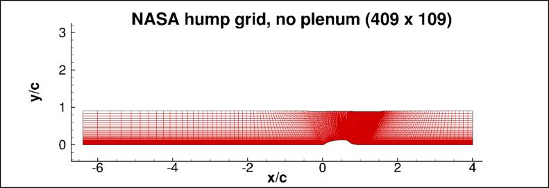
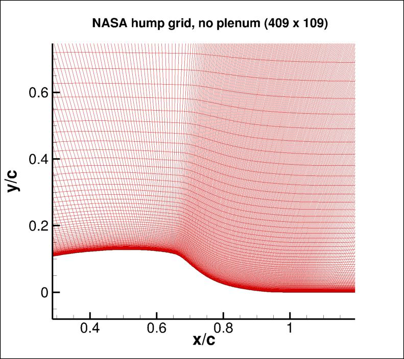

Public Access (formerly Langley Research Center)Turbulence Modeling Resource |
Return to: 2D NASA Wall-Mounted Hump Separated Flow Validation Case Intro Page
Return to: Turbulence Modeling Resource Home Page
Grids (no plenum) - 2D NASA Wall-Mounted Hump Separated Flow Validation Case
Five grids are supplied on this page
for the NASA wall-mounted hump case. These are grids with no plenum. Compare to the
Grids from the CFDVAL2004 Workshop (including plenum).
These grids include a contoured upper wall (to approximately account for side-plate blockage).
The finest grid contains 1633 points streamwise and 433 points normal, for a total of approximately 707,000 points.
Coarser grids are created by removing every other point in each coordinate direction, down to the coarsest
103 x 28 grid.
The finest grid has minimum spacing at the wall of approximately y=4 x 10-6, giving an approximate average
y+ of about 0.1 at the Reynolds number run.
The grid is stretched in the wall-normal direction, and the grid spacing at the upper wall
assumes usage of a slip-wall BC there.
The figures below show two views of the 409 x 109 version of grid.


Note: be sure to use double precision when reading the grids!
STRUCTURED VERSIONS OF GRIDS
PLOT3D Files
The structured PLOT3D grids are given in two different ways, as 2-D grids (x-y plane) or as 3-D grids (two
identical x-z planes, separated by a distance y=1,
giving one spanwise cell for all grid levels). You may use whichever is more convenient for your particular
application.
Format for the structured 2D grids is PLOT3D-type, formatted, MG, 2D (nbl=1) - note that you
must use double precision when reading! :
read(2,*) nbl
read(2,*) (idim(n),jdim(n),n=1,nbl)
do n=1,nbl
read(2,*) ((x(i,j,n),i=1,idim(n)),j=1,jdim(n)),
+ ((y(i,j,n),i=1,idim(n)),j=1,jdim(n))
enddo
Download the 2-D version of the grids in PLOT3D format here:
Format for the structured 3D grid is PLOT3D-type, formatted, MG, 3D (nbl=1, and idim in this case is 2) - note that you must use double precision when reading! :
read(2,*) nbl
read(2,*) (idim(n),jdim(n),kdim(n),n=1,nbl)
do n=1,nbl
read(2,*) (((x(i,j,k,n),i=1,idim(n)),j=1,jdim(n)),k=1,kdim(n)),
+ (((y(i,j,k,n),i=1,idim(n)),j=1,jdim(n)),k=1,kdim(n)),
+ (((z(i,j,k,n),i=1,idim(n)),j=1,jdim(n)),k=1,kdim(n))
enddo
Download the 3-D version of the grids in PLOT3D format here:
If desired, example Neutral Map Files associated with 3-D version of the grids are given here (these files specify grid indices associated with each boundary condition - see The Neutral Map File):
CGNS Files
The structured grids are also available as CGNS files (3-D versions only, with two identical x-z planes, separated by a distance y=1, giving one spanwise cell for all grid levels). Note that the BCs written inside the CGNS files are for guidance only, and may not reflect the appropriate BCs needed for your application. To read/write CGNS files, (free) software may be necessary if your pre/post-processing tools do not already handle it. See: CGNS Website for details.
Download the 3-D version of the grids in CGNS format (gzipped) here:
UNSTRUCTURED VERSIONS OF GRIDS
CGNS and AFLR3 Files
The unstructured versions of the same grids are all given as CGNS and AFLR3 (UGRID) files. Note that the BCs written inside the CGNS files are for guidance only, and may not reflect the appropriate BCs needed for your application. To read/write CGNS files, (free) software may be necessary if your pre/post-processing tools do not already handle it. See: CGNS Website for details.
The unstructured grids are all given as 3-D grids (two identical x-z planes, separated by a distance y=1, giving one spanwise cell for all grid levels). They are given as hexahedra (quadrilaterals in the x-z plane).
Download the unstructured CGNS grids (gzipped) as 3-D hexahedra (quadrilaterals in x-z plane) here:
Download the unstructured AFLR3 grids (gzipped) as 3-D hexahedra (quadrilaterals in x-z plane) here:
Return to: 2D NASA Wall-Mounted Hump Separated Flow Validation Case Intro Page
Return to: Turbulence Modeling Resource Home Page
Recent significant updates:
10/02/2023 - added AFLR3 (UGRID) versions of unstructured grids
Page Curators: Christopher Rumsey,
Ethan Vogel,
Clark Pederson
Last Updated: 04/20/2024